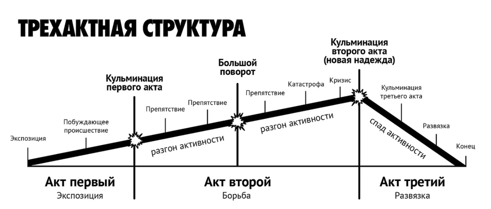
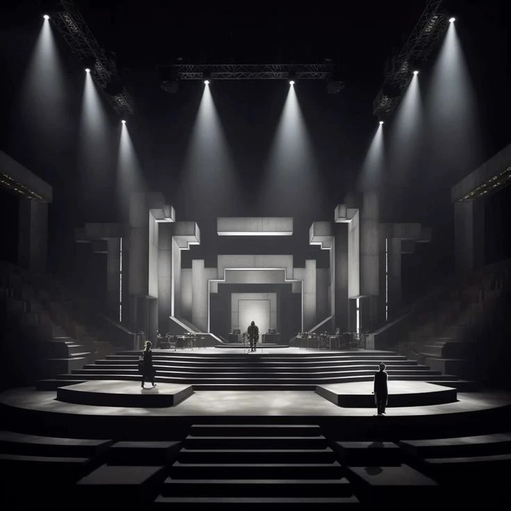
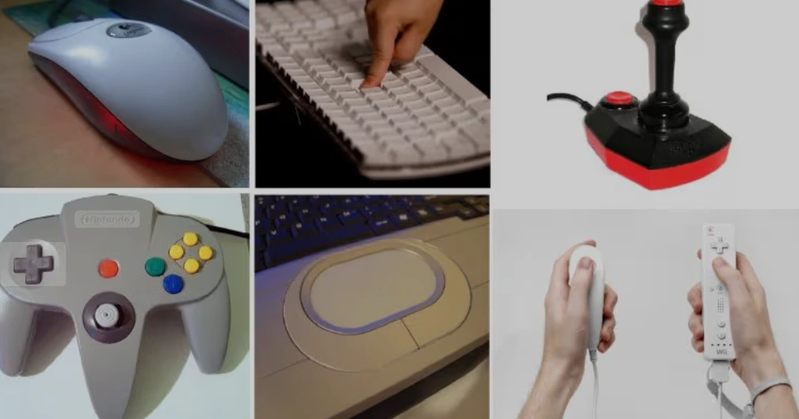
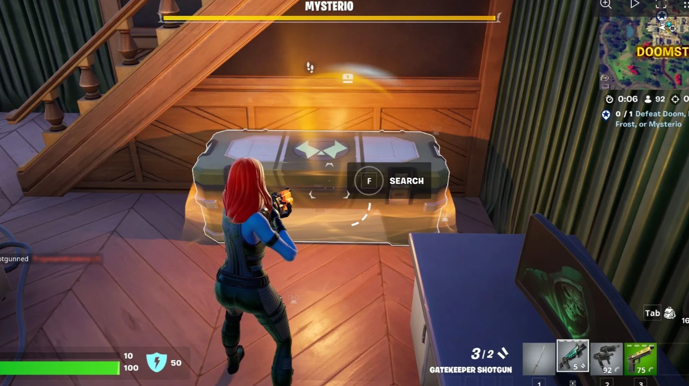
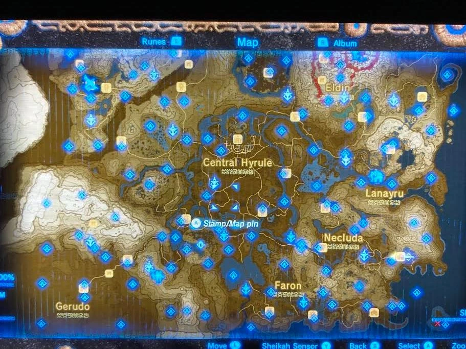

Пространство и поведение: интерактивный нарратив и логика выбора
Сценарий интерактивного проекта описывает не только то, что произойдёт, но и условия, при которых это случится. Посетитель может задержаться, пропустить объект, вернуться назад или уйти. Автору нужно продумать, как система ответит на каждый из этих случаев.
Представим интерактивную выставку об университете. В начале посетитель выбирает научный или культурный маршрут. Позже оба пути приводят к общей карте кампуса, но на ней выделяются разные места. На этом примере разберём связь истории, пространства и технической логики.
От линейной истории к системе событий
В линейном произведении автор задаёт порядок сцен. Трёхактная структура помогает организовать завязку, развитие и завершение. В интерактивном проекте часть этого порядка может определять пользователь, но автор по-прежнему задаёт события, правила и границы возможного.

Нарратив связывает события в историю. Интерактивный нарратив допускает изменения в ходе её прохождения: действия участника влияют на порядок, доступность или содержание событий. У проекта могут быть фиксированный финал и разные пути к нему.
Почему одной линейной последовательности недостаточно
Линейная структура не устарела. Она работает в диалоге, кат-сцене, вступлении, последовательном обучении и внутри отдельного эпизода. Проблема появляется, если весь интерактивный опыт описан как фильм: «сначала человек посмотрит это, затем нажмёт сюда, потом обязательно придёт туда». Участник может действовать иначе, и сценарий должен оставаться связным.
Поэтому меняется единица авторской работы. Вместо одного порядка сцен автор описывает сцены, условия их открытия, действия и последствия. Он контролирует пространство возможностей, а игрок собирает конкретное прохождение внутри него. Чем больше свободы, тем важнее правила, которые удерживают смысл и темп.
Сюжет описывает историю событий, а сценарий игры ещё и её исполнение: что доступно сейчас, что хранится в памяти, какая реплика сработает, если событие уже произошло. Историю можно рассказать нелинейно, не дав игроку никаких решений. И наоборот, игра может оставить основную фабулу линейной, но дать свободу в способах достижения цели.
Как строится сценарий
Начните с ситуации и роли человека. Кто приходит на выставку, что уже знает и что хочет узнать? Затем определите действие, ради которого ему нужна интерактивность. В нашем примере это выбор интересующего направления и исследование связанных с ним мест.
Разделите сценарий на эпизоды: приглашение, выбор, исследование, результат. Для каждого опишите действие человека, ответ системы, условие перехода и данные, которые сохраняются. Сценарий становится пригодным для реализации, когда эти условия можно проверить.
| Эпизод | Действие | Ответ и память системы |
|---|---|---|
| Приглашение | Посетитель касается экрана | Появляются два маршрута |
| Выбор | Выбирает «Наука» | Сохраняется interest = science |
| Исследование | Открывает лабораторию | Показывается материал; объект отмечается как просмотренный |
| Результат | Завершает маршрут | Карта рекомендует места с учётом выбора |
Структуры нелинейного сценария
Дерево решений удобно, когда у развилок нет обратных переходов. Но интерактивная история часто устроена как граф: пути сходятся, сцены повторяются, пользователь возвращается в знакомое место. Не нужно рисовать новое ответвление для каждого возможного сочетания действий.
| Структура | Как работает | Для чего полезна |
|---|---|---|
| Ветвление | Каждый выбор ведёт к своей сцене | Короткие истории с разными исходами |
| Ветвление со схождением | Пути снова встречаются в общей сцене | Контролируемый объём материала с последствиями выбора |
| Центр и маршруты | Из общей точки можно исследовать несколько зон | Музей, карта, цифровая выставка |
| Цикл | Действия повторяются, но состояние меняется | Инсталляция, освоение механики, накопление результата |
Если на каждой из десяти развилок создавать по две независимые ветки, получится до 1024 конечных путей. Поэтому авторы используют общие сцены, переменные и условные фрагменты. Схождение путей не отменяет выбор, если он меняет информацию, отношения или будущие возможности.
Какая структура подходит задаче
| Модель | Что задаёт автор | Что определяет участник | Ограничение |
|---|---|---|---|
| Линейная сцена | Порядок событий внутри эпизода | Темп чтения или способ выполнения | Не описывает альтернативные маршруты |
| Ветки со схождением | Разные подходы и общие опорные сцены | Выбор и сохранённые последствия | Схождение должно учитывать прошлые решения |
| Центр и эпизоды | Набор зон, доступные переходы и условия | Порядок исследования | Нужно помочь ориентироваться и возвращаться |
| Условные сцены | События, которые открываются по состоянию | Когда и как создать нужные условия | Правила приоритетов защищают от противоречий |
| Системный сценарий | Поведение объектов, ресурсы, ограничения | Стратегию и сочетание действий | Возникшие события не всегда складываются в ясную историю |
Эти модели обычно сочетаются. Между фиксированными сюжетными этапами могут находиться свободные области, а внутри каждой области действуют правила и небольшие авторские сцены. Нелинейность не требует, чтобы каждая реплика порождала отдельную новую игру.
На этой схеме одна точка схождения не означает одинаковый результат. Персонаж может помнить обещание, карта сохранять найденный объект, а следующий выбор зависеть от потраченного ресурса. Важно переносить последствия вперёд, а не стирать их при входе в общую сцену.
Выбор и последствия
Явный выбор предложен человеку как вариант действия. Скрытый выбор считывается из поведения: например, система замечает, какие экспонаты он рассматривает дольше. В этом случае нельзя считать время просмотра безошибочным показателем интереса: человек мог отвлечься.
Бывает и декоративный выбор: меняется реплика или цвет, но дальнейший ход остаётся тем же. Он может поддерживать выразительность, однако не стоит обещать пользователю последствия, которых нет.
Важен не только масштаб изменения, но и его читаемость. После выбора научного маршрута система может подписать карту «Места для знакомства с наукой в СФУ». Посетитель понимает, почему видит именно эти рекомендации.
Три игры: три способа построить сценарий
80 Days: маршрут как рассказ
В 80 Days, inkle путешествие складывается из выбора пути и встреч. Ресурсы и время ограничивают решения. Общая цель задаёт направление, но конкретная история зависит от маршрута. Для разбора это пример сочетания карты, авторских эпизодов и состояния.
Наш вопрос к структуре: как сделать каждый участок интересным, если соседние участки игрок может пропустить? Эпизоду нужна локальная завершённость, а общей истории достаточно нескольких узнаваемых опор. Где ограничение времени создаёт драматургию, а где просто мешает исследованию?
Papers, Please: история через правила работы
В Papers, Please, Lucas Pope игрок проверяет документы и решает, кого пропустить. Сценарий раскрывается через повторяющуюся процедуру, новые требования и последствия решений. Диалог и сюжет работают вместе с механикой, а не существуют только в паузах между действиями.
Что меняется, когда моральное решение нужно принять быстро, в рамках знакомой процедуры? Как интерфейс делает противоречие ощутимым? Это наш разбор выразительности механики, а не утверждение, что любой повтор автоматически создаёт сильный сюжет.
The Stanley Parable: отказ следовать рассказчику
The Stanley Parable строит опыт вокруг выбора и противоречия между рассказом и действиями игрока. Само ожидание послушания становится материалом произведения. Здесь заметен важный принцип: «не сделать то, что попросили» тоже может быть предусмотренным действием.
Кто в такой сцене управляет историей: рассказчик, автор возможных реакций или игрок? Что отличает свободу действия от ощущения свободы? Можно ли использовать подобный приём в музее, не превращая посетителя в объект насмешки?
Состояния, события и условия
Состояние описывает текущую ситуацию, событие сообщает о действии, условие определяет, можно ли перейти дальше. Кнопка «Завершить» не должна вести в результат, если необходимый материал ещё не загружен. Возврат в начало требует решения: сохраняем прошлый выбор или сбрасываем его?
В инсталляции со звёздным небом логика может быть другой: нет человека → спокойное небо; человек появился → звёзды реагируют на движение; несколько участников → появляется совместный рисунок; все ушли → система постепенно возвращается в ожидание.
Чтобы краткая потеря сигнала камеры не обрывала опыт, выход из активного режима можно выполнять после заданного времени отсутствия. Это пример того, как техническая деталь меняет драматургию.
От идеи к работающему игровому эпизоду
Представим небольшую историю: посетитель должен попасть в закрытую лабораторию. Можно получить пропуск у сотрудника или найти технический вход. Это учебный пример, а не описание конкретной игры. Сначала определим цель, доступные действия и последствия, затем запишем условия.
| Событие | Условие | Изменение состояния | Видимый ответ |
|---|---|---|---|
| Разговор с сотрудником | Игрок помог сотруднику | has_pass = true | Появляется пропуск и новая реплика |
| Открытие служебного входа | Найден инструмент | alarm = true | Дверь открывается, слышна тревога |
| Вход в лабораторию | Есть пропуск или открыт служебный вход | lab_visited = true | Запускается общий эпизод |
| Встреча с охраной | alarm = true | Доступны другие варианты диалога | Охрана реагирует на способ входа |
Два пути ведут в одно помещение, но сохраняют разные последствия. Если игрок одновременно имеет пропуск и поднял тревогу, сценарий должен явно определить реакцию охраны. Условные фрагменты требуют приоритетов: какая реплика важнее, что показывается один раз, какие события можно повторить.
Такой эпизод записывают не только как диалог. Нужны описание цели, граф переходов, переменные и таблица событий. Реплики опираются на это устройство. Иначе красиво написанный текст будет противоречить уже совершённым действиям.
Авторские события и возникающая история
В авторском эпизоде команда заранее пишет встречу и её варианты. В системном взаимодействии она задаёт правила, а события возникают из их сочетания: персонажи реагируют друг на друга, ресурсы заканчиваются, объект блокирует проход. История конкретного прохождения может оказаться неожиданной даже для автора.
Свобода системы нуждается в границах. Если важный персонаж недоступен, нужен другой способ получить сведения; если игрок пропустил ключ, история не должна молча остановиться. Отдельно проверяют порядок событий, повторный вход, сохранение и загрузку, прерывание диалога и отсутствие действия.
Пространство и тело
Путь, обзор, расстояние до экрана и доступность управления влияют на порядок событий. Проход может направить внимание к следующей сцене; общий стол приглашает к совместному действию; узкая зона ограничивает число участников.

Аффорданс означает возможность действия в отношении человека и среды: ручка позволяет взяться за неё, дверь может позволять пройти. Подсветка или надпись подсказывают, что действие доступно, но сами по себе не являются его физической возможностью. В интерфейсе важно различать действие и знак, который сообщает о нём.


Телесное действие может менять изображение без явного меню выбора. Нужно учитывать положение человека, зону срабатывания, доступную дистанцию и возможность пользоваться проектом сидя.
Здесь полезно наблюдать, как присутствие людей становится материалом изображения. Такой опыт можно описать через состояния даже без сюжетных сцен.

Игровая логика в интерактивном пространстве
У выставки тоже могут быть цель, обнаружение правила и последствия выбора. Но поток людей и время участия отличаются от домашней игры. Посетитель может войти в середине, прийти вместе с другим человеком или не считать себя «игроком». Сценарий должен работать без обязательного знакомства с предыдущими эпизодами.
Для общего стола можно разделить локальный выбор человека и общее состояние группы. Один участник меняет свой объект, а совместное действие открывает новый слой изображения. Нужно заранее решить, кому принадлежит управление, как присоединяется новый человек и что происходит при уходе одного участника.
Можно ли понять опыт за двадцать секунд и при этом найти в нём новое за пять минут? Что система сообщает о последствиях, а что оставляет для открытия? Эти вопросы помогают отличить исследование от произвольного набора кнопок.
Время и ритм прохождения
Время пользователя и время системы могут различаться. Один посетитель быстро проходит выставку, другой возвращается к материалам. Таймер, пауза, повтор и ожидание тоже должны быть частью сценария.
Продумайте поздний вход, бездействие и выход. В публичной инсталляции следующий человек не должен случайно получить незавершённую сессию предыдущего. При ограниченном времени важно показать его остаток и объяснить, что произойдёт после завершения.
Драматургия без обязательного сюжета
Не каждой интерактивной работе нужна история с персонажами и конфликтом. Можно организовать опыт через контраст, повтор, изменение плотности, света или звука. Тогда точнее говорить о драматургии опыта, а не искать сюжет там, где его не задумывали.
Например, звёздное небо сначала выглядит неподвижным. Человек замечает реакцию на движение, начинает исследовать её и затем видит общий рисунок с другими участниками. Интерес возникает из обнаружения правила и его последствий.
Как записывать сценарий
Используйте три формы вместе: короткое описание опыта, схему состояний и таблицу переходов. На схеме подписывайте стрелки конкретными событиями: «выбран маршрут», «прошло время ожидания», «пользователь ушёл». Слова «дальше» или «взаимодействие» не объясняют, когда переход действительно произойдёт.
Для текстового прототипа нелинейной истории подходит Twine. Он помогает связать фрагменты и проверить прохождение до создания полноценного интерфейса. Формат инструмента не заменяет сценарную логику: последствия и условия всё равно задаёт автор.
Хорошо описанный сценарий позволяет команде ответить на простой вопрос: что случится, если человек поступит иначе, чем мы ожидали?
Прототип истории до разработки графики
ink и редактор Inky позволяют записывать разветвлённые истории, проверять их в предпросмотре и готовить текстовые прототипы. Официальный разбор веб-истории показывает переход от текста к работающему прохождению. Twine удобен для начала с визуальной карты фрагментов; выбор между ними зависит от сложности условий и будущей интеграции.
Прототип отвечает на сценарные вопросы раньше, чем появятся дорогие изображения: понятна ли цель, заметны ли последствия, не противоречат ли сцены памяти системы? Для проверки полезно наблюдать за чужим прохождением: объяснения автора могут скрыть проблему, которую должен решать сам проект.